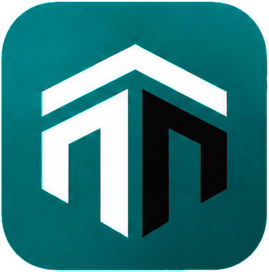
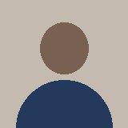

Sabato 7 novembre, 15:30
Under 17 contro US Pontassieve
Token semantici (le pagine usano solo questi), tipografia, spaziature, icone e logo. I campioni mostrano il tema attivo; i valori di entrambi i temi sono riportati sotto ogni colore.
Palette Petrolio intenso con fondo ghiaccio (chiaro) e petrolio scuro (scuro). Pulsante primario #007A7E (5,1:1 col testo bianco, 3,9:1 rispetto al nero del testo); link, contorni e voce attiva #006F76 per restare AA anche sulle superfici attenuate. Gli stati hanno sempre icona e testo; il successo è spostato verso il giallo per staccarsi dal petrolio.
--tm-bgChiaro #F4F7F8 ghiaccio · Scuro #0E1616 petrolio scuro--tm-surfaceChiaro #FFFFFF · Scuro #162020--tm-surface-mutedChiaro #E9EFF1 · Scuro #1E2A2A--tm-borderChiaro #DAE3E6 · Scuro #2E3E3E--tm-border-strongChiaro #777777 · Scuro #869494--tm-textChiaro #090909 · Scuro #F1F4F4--tm-text-mutedChiaro #4A4A4A · Scuro #B3BEBE--tm-primaryChiaro #007A7E · Scuro #4FD1C9--tm-accentChiaro #007A7E · Scuro #4FD1C9--tm-linkChiaro #006F76 · Scuro #4FD1C9--tm-focusChiaro #006F76 · Scuro #4FD1C9--tm-successChiaro #2E7D1F · Scuro #9BD46A--tm-success-bgChiaro #EBF2E9 · Scuro #1A2410--tm-warningChiaro #B26A00 · Scuro #E6A54A--tm-warning-bgChiaro #F7F0E5 · Scuro #2B2112--tm-dangerChiaro #C62828 · Scuro #FF7B66--tm-danger-bgChiaro #F9E9E9 · Scuro #2E1512--tm-infoChiaro #1F5FA8 · Scuro #7EB0EA--tm-info-bgChiaro #E9EFF6 · Scuro #142033Convocazione
Prossimi eventi
Prossimo evento
14
Sabato 7 novembre, 15:30 al Campo comunale Via dello Sport.
11 su 16 hanno risposto
Data di nascita
Raggi: 6 px campi, 10 px pulsanti e segmented, 16 px card e fogli, pillola per badge e interruttori.
Un solo set, griglia 24, tratto 1,75, usato a 16, 20 e 24 px. Sorgente: assets/icons.svg.
Il wordmark non è mai ricreato con un font né ricolorato via CSS: si mostra un'immagine diversa per tema.
Fondo chiaro

Logo ricolorato in petrolio #007A7E (provvisorio, in attesa del vettoriale). Altezza 28 px in sidebar, 40 px nelle schermate di accesso.
Fondo scuro
Versione provvisoria assets/logo-dark.png: petrolio chiaro #4FD1C9 e nero portato a #F1F4F4, ricolorata dall'immagine originale. Da sostituire con l'esportazione dal file vettoriale.
Gli stessi componenti affiancati nei due temi, con lo stesso markup: cambia solo l'attributo data-theme sul contenitore.
Tema chiaro
Sabato 7 novembre, 15:30
Under 17 contro US Pontassieve
Tema scuro
Sabato 7 novembre, 15:30
Under 17 contro US Pontassieve
Il distruttivo usa il colore di errore, mai il primario. Altezza minima 44 px per tutti.
Sempre con aria-label.
L'azione principale di una schermata va a piena larghezza. Tocca il primo pulsante per provare lo stato di caricamento: lo spinner sostituisce l'icona, testo e larghezza non cambiano.
Etichetta sempre sopra il campo, aiuto sotto, errore con icona e testo collegato via aria-describedby. Il placeholder non sostituisce mai l'etichetta e usa il grigio 700. Testo a 16 px nei campi per evitare lo zoom di iOS.
Come appare in rosa e nelle convocazioni.
Errore: inserisci un indirizzo email valido.
Visibile solo allo staff della squadra.
Non inserire informazioni sulla salute.
Disabilitato: non modificabile in questo contesto.
Sola lettura: si cambia dal Profilo.
Errore: per creare l'account devi accettare i Termini.
Pillola alta 24 px, sempre icona e testo. Il tipo di evento è un'etichetta neutra con bordo, non uno stato.
Bordo 1 px, raggio 16 px, nessuna ombra. La card in evidenza ha solo un bordo più marcato: il colore resta alle azioni. Prova la risposta "Ci sono" e "Non posso" nella prima card.
Prossimo evento
Sabato 7 novembre, 15:30
Under 17 contro US Pontassieve
Martedì 10 novembre, 18:30
Allenamento
Sabato 7 novembre, 15:30
Under 17 contro US Pontassieve
Variazione sempre con icona e testo.
È scaduto il 30 ottobre. Finché non carichi quello nuovo non puoi essere convocato.
Carica il certificatoLo staff si dichiara disponibile da solo, in un tap, senza motivo. Giocatori e staff possono dichiarare periodi di assenza: nessun testo libero e nessun motivo, solo le date. Questi elementi servono a Home staff, dettaglio evento, presenze, notifiche e alla schermata Assenze (33).
Varianti: risposta non data (prova i pulsanti: nessun foglio dei motivi), risposta data con "Cambia", staff in assenza, staff squalificato per questa partita. Negli ultimi due i pulsanti sono disabilitati e il motivo è collegato con aria-describedby. La squalifica vale solo per le partite: negli allenamenti i pulsanti restano attivi.
La tua disponibilità
Sabato 7 novembre, 15:30
Partita contro US Pontassieve
La tua disponibilità
Sabato 7 novembre, 15:30
Partita contro US Pontassieve
La tua disponibilità
Sabato 7 novembre, 15:30
Partita contro US Pontassieve
Sei in assenza fino al 15/11Gestisci assenze
La tua disponibilità
Sabato 7 novembre, 15:30
Partita contro US Pontassieve
Sei squalificato per questa partita
Solo chi è disponibile. Se nessuno lo è, la sezione non compare.
Sola lettura tranne la propria riga ("Tu"). Prova "Ci sono": la riga passa tra i Disponibili e l'avviso "Nessun allenatore disponibile" sparisce. Lo staff non ha le liste convocati, convocabili e non convocabili.
Nell'evento risulta tra i Non disponibili con il controllo disabilitato. Negli allenamenti il controllo resta attivo.
Sei squalificato per questa partita
Per i giocatori solo due valori: Disponibile e Infortunato. Lo staff non ha uno stato manuale. Sospeso e Ceduto non esistono più. La squalifica non è uno stato dell'iscrizione: si gestisce nella schermata Squalifiche (34). Il selettore è visibile solo a chi gestisce la squadra e all'admin.
Vista di chi gestisce la squadra
Visibile solo a chi gestisce la squadra e all'admin.
Vista dell'interessato
Lo imposta chi gestisce la squadra.
Periodo, squadra e stagione, stato. Le assenze di una stagione chiusa sono in sola lettura: menu disabilitato.
Nome della società nel titolo. Non letta: testo in grassetto e pallino d'accento, con "Non letta" per lo screen reader. Il tocco apre la scheda della persona.
La squalifica riguarda solo le partite. Scheda squalifica per la schermata 34 e per la scheda persona; disabilitazione e archivio dei disabilitati (35) per l'admin.
Persona (giocatore o staff), badge, tipo, residuo o scadenza, partite coinvolte con "Scontata" o "Da scontare". Terza scheda: residuo a fine stagione.
Prova "Disabilita persona": il modale spiega le conseguenze e offre l'alternativa "Chiudi solo l'iscrizione in questa squadra". La stessa azione è nel menu a tre punti delle card della Rosa (sezione Collezioni).
Visibile solo all'admin della società.
In Amministrazione. Ricerca, Riabilita ed Esporta dati. Nella Rosa i disabilitati non compaiono mai.
Righe a tre zone fisse: inizio (numero di maglia e avatar, larghezza costante), corpo (nome, ruolo, stato su righe distinte), fine (una sola azione da 44 px). Numero e stato partono sempre dallo stesso punto, qualunque sia la lunghezza del testo. Le azioni secondarie vanno nel menu a tre punti.
Avatar con il numero di maglia sotto: colonna larga quanto l'avatar, quindi nomi e stati partono sempre dallo stesso punto.
Avatar con il numero di maglia sotto (negli sport individuali solo avatar). Tra i convocati solo stati confermato, senza risposta e da avvisare: a destra l'interruttore Titolare/Panchina (solo sport di squadra) e "Togli". Chi declina passa tra i non convocabili, senza azioni (seconda lista). Chi è appena stato aggiunto ha il fondo d'accento finché non viene avvisato.
Senza numero di maglia (staff) la colonna iniziale contiene solo l'avatar.
Serve a leggere a colpo d'occhio "che giorno è": la data a sinistra raggruppa gli eventi dello stesso giorno, oggi è evidenziato. Il giocatore vede la propria risposta, lo staff i conteggi. Da 1024 px gli eventi dello stesso giorno si affiancano.
Su mobile i fogli salgono dal basso; da 768 px diventano modali centrate. Elementi flottanti: ombra leggera nel tema chiaro, superficie più chiara e bordo nel tema scuro.
Esc chiude, il focus torna al pulsante che ha aperto il foglio. Tocco sullo sfondo: chiude.
Per il dettaglio di un elemento di un elenco (es. una squalifica): pannello a destra da 1024 px, modale su tablet, foglio dal basso su telefono. L'elenco resta a righe di altezza uniforme.
Successo e info si chiudono dopo 5 secondi; l'errore resta finché non lo chiudi ed è annunciato subito (role alert).
Un solo pattern a ogni larghezza al posto delle tabelle: card in griglia, una colonna su telefono e più colonne quando c'è spazio (allarga la finestra per vederlo). Ricerca, filtri, ordinamento e selezione sono gli stessi su mobile e desktop.
Prova a cercare, filtrare, ordinare e selezionare. La card selezionata ha il bordo del colore attivo; tutta la card è cliccabile e apre la scheda.
Vuoto con una sola azione, caricamento con skeleton che ricalca il contenuto (mai spinner a tutta pagina), errore comprensibile con "Riprova", offline.
Quando lo staff crea un allenamento o una partita lo trovi qui.
Scegli dai convocabili chi chiamare per questa partita.
Controlla la connessione e riprova. I dati già scaricati restano consultabili.
Offline: il banner compare sotto l'header e le azioni di modifica si disabilitano con spiegazione.
Avatar con iniziali su grigio 100 o foto; barra di avanzamento neutra (non è un'azione, quindi niente colore primario); stepper per la chiusura stagione con il passo corrente nel colore d'accento.

Ogni elemento del catalogo ha l'attributo data-nuxt-ui. Questa tabella riassume la corrispondenza e le personalizzazioni da fare in app.config.ts.
| Componente | Classe mockup | Nuxt UI v4 | Note |
|---|---|---|---|
| Pulsante | tm-button | UButton | varianti: solid, outline, ghost, color error per il distruttivo; loading sostituisce l'icona leading |
| Campo | tm-field + tm-input | UFormField + UInput | label, help, error; UInputDate per le date |
| Password | tm-input-group | UInput + UButton nello slot trailing | |
| Select | tm-select | USelect | |
| Area di testo | tm-textarea | UTextarea | |
| Checkbox | tm-check | UCheckbox | |
| Radio | tm-fieldset + tm-check | URadioGroup | |
| Interruttore | tm-switch | USwitch | |
| Titolare/Panchina | tm-tp | UButton come toggle (aria-pressed) | solo sport di squadra |
| Testata di attività | tm-header--task | UDashboardNavbar con slot leading | |
| Segmented (navigazione) | tm-segmented role tablist | UTabs variant pill | tab della convocazione |
| Segmented (scelta) | tm-segmented role radiogroup | URadioGroup variant table, orizzontale | tipo evento, esiti presenze, T/P |
| Badge | tm-badge | UBadge | variant soft + icona |
| Card | tm-card | UCard | variant outline, nessuna ombra |
| Persona in riga | tm-person, tm-row | UUser negli slot di una lista | |
| Avatar | tm-avatar | UAvatar | |
| Menu | tm-menu | UDropdownMenu | |
| Bottom sheet | tm-dialog | UDrawer (mobile) / UModal (da 768 px) | |
| Modale | tm-dialog | UModal | |
| Pannello laterale | tm-dialog--side | USlideover (desktop) / UDrawer (telefono) | dettaglio di un elemento di elenco |
| Toast | tm-toast | UToast via useToast() | |
| Banner | tm-banner, tm-notice | UAlert | |
| Collezione a card | tm-collection + tm-entity | UCard in griglia CSS | UTable non usato: stesso layout a ogni larghezza |
| Agenda | tm-agenda + tm-day + tm-event-item | componente personalizzato | |
| Paginazione | tm-pagination | UPagination | per collezioni lunghe |
| Breadcrumb | tm-breadcrumb | UBreadcrumb | |
| Tab | tm-tabs | UTabs variant link | |
| Sidebar | tm-sidebar | UDashboardSidebar + UNavigationMenu | |
| Tab bar | tm-tabbar | UNavigationMenu orizzontale, personalizzato | nessun equivalente diretto |
| Header | tm-header | UHeader o UDashboardNavbar | |
| Stato vuoto | tm-empty | UEmpty | verificare la disponibilità nella versione in uso |
| Skeleton | tm-skeleton | USkeleton | |
| Avanzamento | tm-progress | UProgress | |
| Stepper | tm-stepper | UStepper | |
| Selettore tema | tm-theme-switch | UColorModeSelect | |
| Notifica | tm-notif | ULink in lista + UChip per non letta | |
| Scheda squalifica | tm-squal + tm-minilist | UCard | |
| Calendario squalifiche | tm-calendar | componente personalizzato | vista secondaria: l'elenco resta la fonte accessibile |
| Gruppo di sezione | tm-group, tm-group-title | markup semplice |
Il primario è la scala petrolio (500 pulsante, 600 link e contorni), da registrare come scala personalizzata in main.css con @theme e assegnare a primary in app.config.ts; i valori del tema scuro vanno sotto .dark. Il successo va ridefinito (#2E7D1F). Verificare la configurazione esatta sulla versione di Nuxt UI v4 in uso.
| Token mockup | Variabile Nuxt UI |
|---|---|
--tm-primary | --ui-primary (scala petrolio, 500) |
--tm-link, --tm-accent | --ui-primary (600 e 500) |
--tm-bg | --ui-bg |
--tm-surface-muted | --ui-bg-muted |
--tm-surface-raised | --ui-bg-elevated |
--tm-border | --ui-border |
--tm-border-strong | --ui-border-accented |
--tm-text | --ui-text-highlighted / --ui-text |
--tm-text-muted | --ui-text-muted |
--tm-success, --tm-warning, --tm-danger, --tm-info | --ui-success, --ui-warning, --ui-error, --ui-info |
--tm-radius-md | --ui-radius (base 10px) |